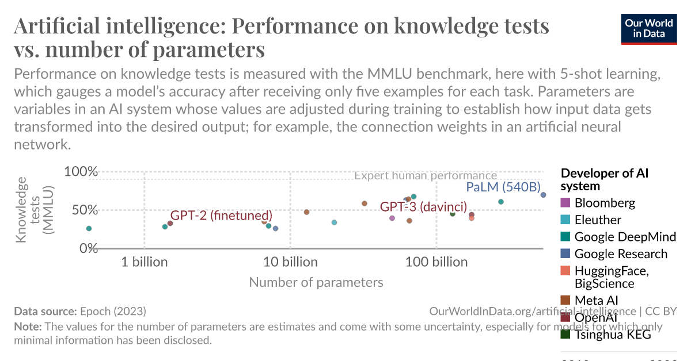

<2024-07-08 সোম>
In this article, we look back at a fundamental question of AI research - what is intelligence? From looking at the emergent behavior of Large Language Models, I had the notion that intelligence may have strong association with the number of neurons. So if a model or entity has few number of neurons, it is comparatively less intelligent.
We see this pattern in animal kingdom. With evolution, our number of neurons increased.
Similarly, we see similar trend in AI model training. The model size increased faster than Moore's law. 
And 1 also reports a correlation between Intelligence of Large Language Models and their size. 
With these knowledge in mind, I was looking at an insect the other day. I don't know what species it belongs to or its name. It was small - If we consider "1 ant" to be our unit of measurement, then it was 2 ant long. I looked at it and thought,
What difference is there between you and a lifeless object?
Its head was so small. I reckon it did not even have neurons rather a crudely made sensory lines in its back. So there is really no difference between it and some robot.
Or so i thought initially. However, Neurobiological research on bees, and computer models replicating their brain operations, have shown that relatively advanced levels of intelligence can naturally emerge from exceptionally small nervous circuits 2.
The emergent behaviors and the tendency to prioritize long term benefits over short term benefits are common in insects. Specially the emergent behavior part is what we want to focus on. They can explore, sense their perceived world the way human does.
We strongly believe that
Emergent behaviors is intelligence.
So we don't think intelligence is associate with large number of neurons. Because insects with much simpler structure also shows emergent behaviors. In author's opinion, number of neurons just needs to be enough to understand the distribution of the data the insect perceives. Same applies for neural networks. In other words, we can get emergent behaviors from a DNN with only 100 neurons if the data has simpler distribution. In such case, we need to figure out which behavior do we call emergent behavior? Being able to predict on the data it has not been trained on? But all neural networks do that. Then what exactly is emergent behavior?
Emergent behavior is nothing but prediction capability. A model that learns many things, even if in unsupervised manner, can do many things. From this perspective, if we gather all the data an insect perceives (magnetic wave, smell etc.) and then train a transformer, it will also show us the emergent behaviors an insect can show.
So what is intelligence? Haven't we already invented intelligence? Emergent behaviors IS intelligence!
Epoch (2023) – with minor processing by Our World in Data. “Performance on knowledge tests (MMLU)” [dataset]. Epoch, “Large Language Model Performance and Compute” [original data].↩︎